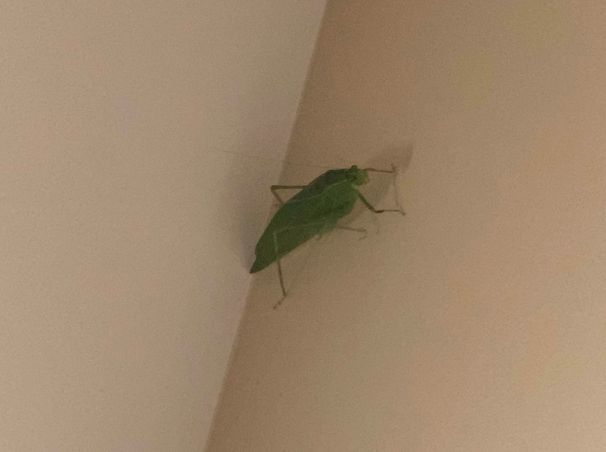

Arthropods Found in New Jersey
Swamp Cicada
Neotibicen tibicen

Description
Neotibicen tibicen is mostly dark-bodied, with some individuals darker than others, reaching almost black, while some individuals are very clearly patterned and brown. This species has many described races and is subject to individual and regional variability. The average body length is 33–37 mm. N. tibicen has transparent wings with a slightly brownish tint in some populations. It usually has a black pronotal collar, although some populations may have one that is brownish green or entirely green. Pronotal shoulder patches are large and solid green; the mesonotum is mostly black, although some populations may have a patterned mesonotum with green or reddish brown. The nominate race has two distinctive yellow lines adjacent to each other that almost meet at the ends. N. tibicen has a dorsolateral white pruinose spot where the abdomen meets the thorax. The opercula of the males are unusually long in this species, a characteristic that is very distinctive.
Diet
Adults of Neotibicen tibicen feed on sap from trees (a watery tree fluid containing amino acids and minerals) using their sucking, piercing mouthparts to reach the xylem, which is one of the two types of transport tissue in vascular plants. Cicadas are able to derive nutrition from the xylem thanks to bacterial endosymbionts that live in the cicada’s gut. Cicada are known for drinking xylem from tree roots (as nymphs) and branches & twigs (as adults), however, when they are small, they must rely on grasses, and possibly other small plants for nourishment. Young cicada nymphs are smaller than a grain of rice when they first begin feeding so the tiny roots of grasses are the best fit for their small beaks. Grass roots are likely the first roots a young cicada nymph will encounter, as they are close to the surface. Deciduous trees shed their rootlets in winter months, but grasses do not. This is not an issue in tropical regions.
Range/habitat
This cicada most frequently inhabits deciduous forest, riparian ecosystems, shrubland, upland meadows and; to a lesser extent, eastern tall-grass prairies. Although one of the common names of this species is "swamp cicada", it is rarely associated with swampy areas. N. tibicen can also be found in tall grasses and herbaceous plants adjacent to woodlands and riparian areas. It seems to be associated with most ecosystems, and can also be abundant in urbanized and residential areas with many trees. This cicada is active from July to August across most of its distribution, however, some areas may vary in emergence to decline dates based upon weather and various other environmental factors. Areas from southern Florida that rarely have frost tend to have a longer season for cicadas, which may be active from as early as June to late as January.
Fall Webworm
Hyphantria cunea

Description
The fall webworm is known principally for its larval stage, which creates the characteristic webbed nests on the tree limbs of a wide variety of hardwoods in the late summer and fall. The caterpillars are highly variable in coloration, ranging from a pale yellow to dark grey, with yellow spots and long and short bristles. There are two cream stripes along the sides. The two races—one more common in the north, the other in the south—differ in head capsule coloration. The maximum length of larvae is 35 mm. Webs are progressively enlarged and much messier looking than those of tent caterpillars. Larvae feed inside the tents until the late instars. Very young larvae feed only on the upper surfaces of leaves; later, they consume whole leaves. The larval stage lasts about four to six weeks. The pupa stage overwinters in the bark and leaf litter at the base of the trees. It is dark brown and about 10 mm long. The thin brown cocoon is made of silk with bits of detritus interwoven. The adult is mostly white in the North America regions, but in the south, it may be marked with black or brown spots on the forewings. It is quite 'hairy' and the front legs have bright yellow or orange patches. The underwings will have less marking than the forewings, and the abdomen often has a sprinkling of brown hairs. It has a wingspan with a range of 35–42 mm.
Diet
The fall webworm feeds on just about any type of deciduous tree, where leaves are chewed; branches or the entire tree may become defoliated. In the eastern U.S., pecan, walnut, American elm, hickory, fruit trees, and some maples are preferred hosts; in some areas persimmon and sweetgum are also readily eaten. In the west, alder, willow, cottonwood and fruit trees are commonly used.
Range/habitat
The moth is native to North America, ranging from Canada to Mexico. It is one of the few insect pests introduced from North America into other continents. The fall webworm spread very quickly across the world due to factors such as trade and rapid transit, so that now it is considered holarctic in distribution. The fall webworm has a large number of host plants around the world. Some examples include: pecan trees, American elm, black walnut, willow, madrone, mulberry, ailanthus, American sycamore, Asian white birch, and many more. Host plant selection is dependent on factors like the plant's degree of sun exposure, age, environmental stress undergone, toughness, and nutritional quality. For example, for an insect that needs energy for processes like dispersal or diapause, consuming plants that provide a lot of carbohydrates could be beneficial; for a female insect that is producing eggs, consuming plants that provide a lot of protein could be beneficial.
Broad-winged Katydid
Microcentrum rhombifolium
Hasbrouck Heights, New Jersey on 9/22/19 at 6:59 PM" width="450" height="auto" onclick="insertModal('broad-winged-katydid')">Description
These are large insects, with some at least two inches from the head to the tip of the wings. They are pale-green color with an angular form in side view, leading to another common name for the species, the “greater angle-wing katydid”. The hind legs are long and thin, the base thickened to allow jumping. Antennae are very long and thread-like. It differs from other Scudderia in that the forewings are broad — the lower edge of each forewing curves down, making this katydid noticeably wider at the middle than other species in the genus. Even when not seen, the broad-winged katydid is one of the most often heard insects, making clicking calls in trees and shrubs during late summer. The eggs are also a distinctive stage of this insect. They are flat and laid in loose double rows on twigs or leaf midribs, somewhat resembling fish scales. Originally black when laid, the eggs rapidly become cream colored.
Diet
Although katydids feed on leaves, they are never abundant enough to cause significant damage to plants. Incidentally, katydids may feed on some small insects present on the plants. During mating the male passes to the female, a large nutritive packet (spermatophore) that the female feeds on and uses to help nourish developing eggs.
Range/habitat
Common in upland meadows of goldenrod and asters, but also found in damp areas and among high-bush blueberries. They are masters of camouflage. The Broad-winged Katydid can be found in a variety of habitats, including rural and urban areas with lots of vegetation, such as forests, parks, alleys, natural reserves etc. They are spread all over the eastern and central US and are present starting with April up until November.
Song
A katydid that counts! The nocturnal song is a series of about five groups of lippy buzzing notes with a peak frequency of about 10 kHz. The male starts by giving a quick sequence of two or three buzzes. After remaining silent for a number of seconds, he next gives a rapid sequence of four or five buzzes. After another long pause, he gives a sequence of five or six buzzes, and so forth until he completes the entire series. In other words, each successive utterance in a song-series adds one or two buzzes, as if the insect were counting. The interval between these “counting sequences” is highly variable but is usually a number of minutes. There is also a gradual increase in volume from the beginning of a series to the end. Broad-winged Bush Katydids sing a different song during the day — a five-syllabled lippy rattle, given singly or in a series.
Julid Millipede
Cylindroiulus caeruleocinctus
Demarest, New Jersey on 11/3/19 at 3:18 PM" width="400" height="auto" onclick="insertModal('julid-millipede')">Description
They are long, smooth-bodied and cylindrical, and mostly gray or black in color. Julid millipedes possess repugnatorial glands, which discharge defensive secretions, including benzoquinones, which are capable of irritating potential predators. Other millipedes (and other arthropods) should always be preserved separately from julidans, as benzoquinones can harden alcohol-preserved specimens and stain them a dark red. During mating, the males wrap themselves around the female and pass a spermatophore to the female via the modified pair of legs (gonopods) on segment seven. Eggs are laid in the soil or under logs or rocks. Juveniles possess three pairs of legs after hatching. Additional leg pairs and body segments are added through successive moults.
Diet
Julid millipedes are detritivores and feed on decomposing vegetation, feces, or organic matter mixed with soil. They play an important role in the breakdown and decomposition of plant litter. The leaf litter is fragmented in the millipede gut and excreted as pellets of leaf fragments, algae, fungi, and bacteria, which facilitates decomposition by the microorganisms.
Range/habitat
Julid millipedes occur on all continents except Antarctica, and occupy almost all terrestrial habitats, ranging as far north as the Arctic Circle in Iceland, Norway, and Central Russia, and as far south as Santa Cruz Province, Argentina. Julid millipedes are found under logs and rocks, in leaf litter, and under the bark of trees. They prefer to live where they can find high levels of moisture and protection. Ideal living spaces include under rocks, mulch beds, flowerbeds, and gardens. Typically forest floor dwellers, they live in leaf litter, dead wood, or soil, with a preference for humid conditions. They are entirely harmless to humans, do not spread disease, infest food, or cause any damage. Because they thrive outdoors, millipedes cannot reproduce indoors and will quickly die if they can't find their way back outside.